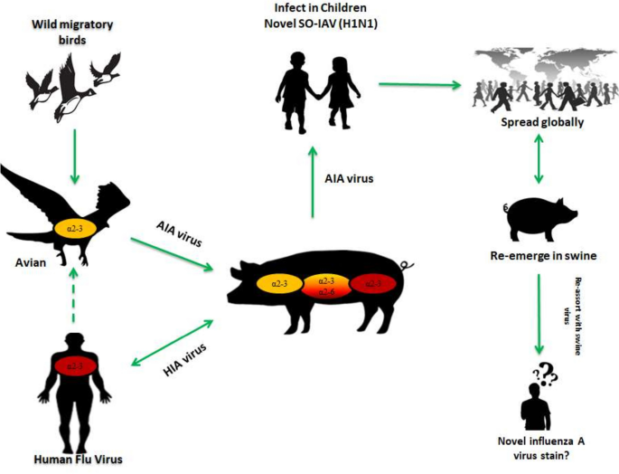

Year Originated
1918
Location of Origin
Spain
Spread of Virus/Disease
Global pandemic
Precautions required
Wear masks, apply Vaccine as annual flu shot for children 6 months old above , stay contact with doctor
1918
Spain
Global pandemic
Wear masks, apply Vaccine as annual flu shot for children 6 months old above , stay contact with doctor

In virology, influenza A virus subtype H1N1 (A/H1N1) is a subtype of influenza A virus. Major outbreaks of H1N1 strains in humans include the 1918 Spanish flu pandemic, the 1977 Russian flu pandemic and the 2009 swine flu pandemic. It is an orthomyxovirus that contains the glycoproteins hemagglutinin (H) and neuraminidase (N), antigens whose subtypes are used to classify the strains of the virus as H1N1, H1N2 etc. Hemagglutinin causes red blood cells to clump together and binds the virus to the infected cell. Neuraminidase is a type of glycoside hydrolase enzyme which helps to move the virus particles through the infected cell and assist in budding from the host cells.
Some strains of H1N1 are endemic in humans and cause a small fraction of all influenza-like illness and a small fraction of all seasonal influenza, for instance in 2004 to 2005. Other strains of H1N1 are endemic in pigs (swine influenza) and in birds (avian influenza). Its size is 80 to 120 nm (3.1×10−6 to 4.7×10−6 in) in diameter.
Genetic analyses of virus from tissue preserved medically or in permafrost suggest that modern seasonal H1N1 strains descended from the 1918 flu pandemic virus, but not conclusively so.
People with H1N1 have reported a wide range of symptoms ranging from mild to severe. Symptoms may appear approximately 3-15 days after exposure to the virus. Anyone can have mild to severe symptoms. Possible symptoms include:
This list does not include all possible symptoms. Symptoms may change with new Influenza variants and can vary by person. The CDC will continue to update this list as we learn more about Influenza.

The stats below show the danger and consequences of Influenza H1N1

In 1918, there were still no vaccines or medication to cure flu or to provide immunization against influenza, only basic health recommendations under the heading "Advice to the People," such as: avoid crowds, do not visit other people, practice personal hygiene, etc., which were published repeatedly over several weeks in a number of newspapers. Similar concerns were shown in 2009, since "as was the case at the beginning of the twentieth century, doctors-researchers around the world had still not completely deciphered influenza (its control or effective prevention) and the measures to combat influenza A remind us very much of similar procedures used to fight the Spanish flu epidemic of 1918 ".
It should be said that addressing the all the main epidemic cause by H1N1 using the same parameters as those used at the time of the Spanish flu epidemic of 1918, was short sighted to say the least. Even the way the press handled the matter did not seem to take into account the great advances that have been made in the sanitation conditions in present-day society. Indeed, the press treated the outbreak of influenza A (H1N1) as if it were comparable to the Spanish flu epidemic, failing to consider the different contexts in which each outbreak occurred. If, on the one hand, the deadly threats posed by influenza A (H1N1) were reported in the press, on the other hand the newspapers did little to explain these in the context of the technological developments that had been achieved in the field of contemporary biomedicine.
The biggest impact in the end is still this virus attack into the group of weak and childrens, causing a global panic on a terror level. Millions of jobs and the whole economic went into a recession, the high death toll and the psychology it inflicted on peoples also count
Treatment is largely supportive and consists of bedrest, increased fluid consumption, cough suppressants, and antipyretics and analgesics (eg, acetaminophen, nonsteroidal anti-inflammatory drugs) for fever and myalgias. Severe cases may require intravenous hydration and other supportive measures. Antiviral agents may also be considered for treatment or prophylaxis (see Medication). Patients should be encouraged to stay home if they become ill, to avoid close contact with people who are sick, to wash their hands often, and to avoid touching their eyes, nose, and mouth. The CDC recommends the following actions when human infection with H1N1 influenza (swine flu) is confirmed in a community [4] : Patients who develop flulike illness (ie, fever with either cough or sore throat) should be strongly encouraged to self-isolate in their home for 7 days after the onset of illness or at least 24 hours after symptoms have resolved, whichever is longer. To seek medical care, patients should contact their health care providers to report illness (by telephone or other remote means) before seeking care at a clinic, physician's office, or hospital. Patients who have difficulty breathing or shortness of breath or who are believed to be severely ill should seek immediate medical attention. If the patient must go into the community (eg, to seek medical care), they should wear a face mask to reduce the risk of spreading the virus in the community when coughing, sneezing, talking, or breathing. If a face mask is unavailable, ill persons who need to go into the community should use tissues to cover their mouth and nose while coughing. While in home isolation, patients and other household members should be given infection control instructions, including frequent hand washing with soap and water. Use alcohol-based hand gels (containing at least 60% alcohol) when soap and water are not available and hands are not visibly dirty. Patients with H1N1 influenza should wear a face mask when within 6 feet of others at home. Antiviral therapy may be indicated. Available medications are discussed in the Medication section.
Discover other virus and how they devastated the society read more to explore further.
© VERTEX SYSTEM. Develop by TranVietBach. All Rights Reserved.